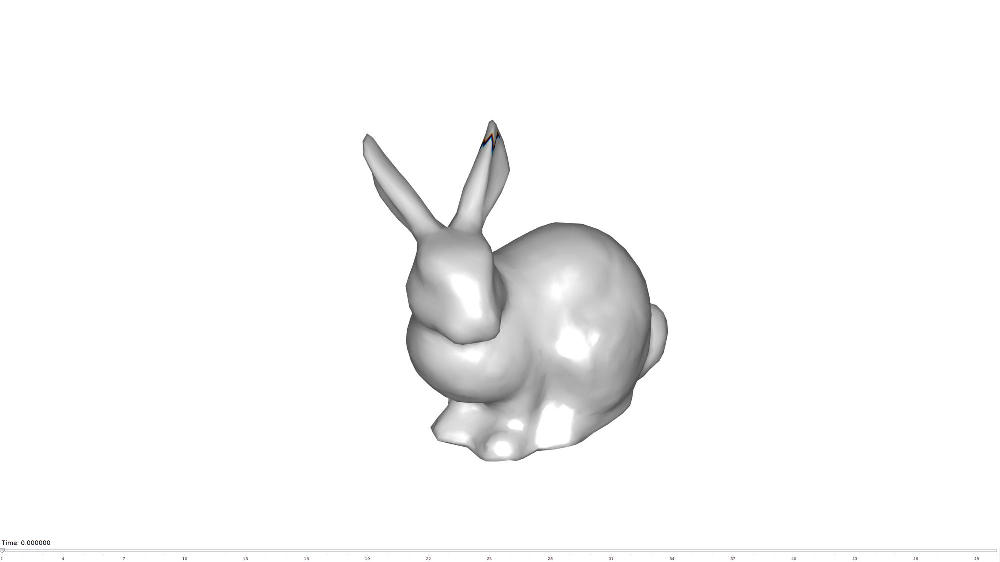
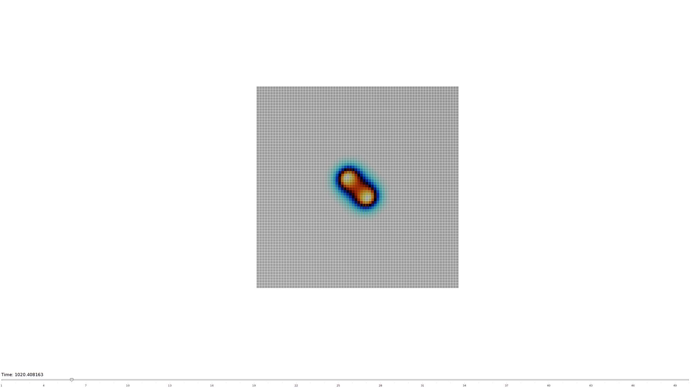
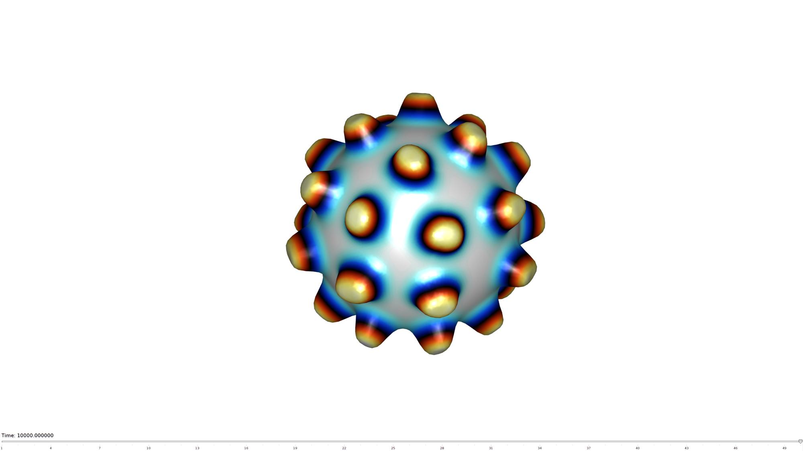

reactionDiffusionMesh
Below is a demonstration of the features of the reactionDiffusionMesh function
Contents
clear; close all; clc;
Syntax
[A,B]=reactionDiffusionMesh(F,V,controlPar);
Description
Examples
Example: Reaction diffusion on gridded mesh
Get surface data
n=75; [X,Y]=ndgrid(linspace(-1,1,n)); Z=zeros(size(X)); [F,V]=surf2patch(X,Y,Z);
Set initial values
L=heaviside(V(:,1))>0 & heaviside(V(:,2))>0; A=double(~L); %Initial A values B=double(L); %Initial B values
Create control parameter structure
patternType=2; % Kill rates switch patternType case 1 %Coral controlPar.f=0.055; controlPar.k=0.062; case 2 %Spots controlPar.f=0.0367; controlPar.k=0.0649; end % Initial valus controlPar.A=A; controlPar.B=B; % Diffusion rates controlPar.da=1; controlPar.db=0.5; % Time stepping parameters controlPar.timeTotal = 10000; %Final time controlPar.dt=0.5; %Time step size % controlPar.waitbar=1; controlPar.numSaveSteps=50;
Compute reaction diffusion process
[~,B]=reactionDiffusionMesh(F,V,controlPar);
Create animated view of results
hf1=cFigure; hp=gpatch(F,V,B(:,end),B(:,end)); % shading interp; axisGeom; camlight headlight; colormap(fireice); %colorbar; axis off; view(2); drawnow; %Create the time vector animStruct.Time=linspace(0,controlPar.timeTotal,controlPar.numSaveSteps); for q=1:1:controlPar.numSaveSteps %Set entries in animation structure animStruct.Handles{q}=[hp]; %Handles of objects to animate animStruct.Props{q}={'CData'}; %Properties of objects to animate animStruct.Set{q}={B(:,q)}; %Property values for to set in order to animate end anim8(hf1,animStruct);

Example: Reaction diffusion on a closed surface mesh
Get surface data
[F,V]=stanford_bunny; %Bunny mesh [F,V]=subtri(F,V,1); %Refined version
Set initial values
X=V(:,1); Y=V(:,2); Z=V(:,3); [zMax,indMax]=max(Z(:)); r=sqrt((X-X(indMax)).^2+(Y-Y(indMax)).^2); L=r<0.1*max(r(:)) & Z>0.9.*max(Z(indMax)); A=double(~L); %Initial A values B=double(L); %Initial B values
Create control parameter structure
patternType=1; % Kill rates switch patternType case 1 %Coral controlPar.f=0.055; controlPar.k=0.062; case 2 %Spots controlPar.f=0.0367; controlPar.k=0.0649; end % Initial valus controlPar.A=A; controlPar.B=B; % Diffusion rates controlPar.da=1; controlPar.db=0.5; % Time stepping parameters controlPar.timeTotal = 8000; %Final time controlPar.dt=0.5; %Time step size % controlPar.waitbar=1; controlPar.numSaveSteps=50;
Compute reaction diffusion process
[A,B]=reactionDiffusionMesh(F,V,controlPar);
Create animated view of results
hf2=cFigure; hp=gpatch(F,V,B(:,end),'none'); shading interp; axisGeom; camlight headlight; lighting gouraud; colormap(fireice); %colorbar; axis off; drawnow; %Create the time vector animStruct.Time=linspace(0,controlPar.timeTotal,controlPar.numSaveSteps); for q=1:1:controlPar.numSaveSteps %Set entries in animation structure animStruct.Handles{q}=[hp]; %Handles of objects to animate animStruct.Props{q}={'CData'}; %Properties of objects to animate animStruct.Set{q}={B(:,q)}; %Property values for to set in order to animate end anim8(hf2,animStruct);

Example: Deforming mesh based on reaction diffusion pattern
r=1; [F,V]=geoSphere(5,r);
Set initial values
L=V(:,3)>=0.98; A=double(~L); %Initial A values B=double(L); %Initial B values
Create control parameter structure
patternType=2; % Kill rates switch patternType case 1 %Coral controlPar.f=0.055; controlPar.k=0.062; case 2 %Spots controlPar.f=0.0367; controlPar.k=0.0649; end % Initial valus controlPar.A=A; controlPar.B=B; % Diffusion rates controlPar.da=1; controlPar.db=0.5; % Time stepping parameters controlPar.timeTotal = 10000; %Final time controlPar.dt=0.5; %Time step size % controlPar.waitbar=1; controlPar.numSaveSteps=50;
Compute reaction diffusion process
[A,B]=reactionDiffusionMesh(F,V,controlPar); 
Compute vertex normals
[~,~,N]=patchNormal(F,V); %Normal vectors for each node
heightOffset=mean(patchEdgeLengths(F,V))*20;
Create animated view of results
Vn=V+(B(:,size(B,2)*ones(1,3)).*N.*heightOffset); %Add offset to coordinates hf2=cFigure; hp=gpatch(F,Vn,B(:,end),'none'); hp.FaceColor='interp'; axisGeom; camlight headlight; lighting gouraud; colormap(fireice); %colorbar; axis off; drawnow; %Create the time vector animStruct.Time=linspace(0,controlPar.timeTotal,controlPar.numSaveSteps); for q=1:1:controlPar.numSaveSteps Vn=V+(B(:,q*ones(1,3)).*N.*heightOffset); %Set entries in animation structure animStruct.Handles{q}=[hp,hp]; %Handles of objects to animate animStruct.Props{q}={'CData','Vertices'}; %Properties of objects to animate animStruct.Set{q}={B(:,q),Vn}; %Property values for to set in order to animate end anim8(hf2,animStruct);
GIBBON footer text
License: https://github.com/gibbonCode/GIBBON/blob/master/LICENSE
GIBBON: The Geometry and Image-based Bioengineering add-On. A toolbox for image segmentation, image-based modeling, meshing, and finite element analysis.
Copyright (C) 2019 Kevin Mattheus Moerman
This program is free software: you can redistribute it and/or modify it under the terms of the GNU General Public License as published by the Free Software Foundation, either version 3 of the License, or (at your option) any later version.
This program is distributed in the hope that it will be useful, but WITHOUT ANY WARRANTY; without even the implied warranty of MERCHANTABILITY or FITNESS FOR A PARTICULAR PURPOSE. See the GNU General Public License for more details.
You should have received a copy of the GNU General Public License along with this program. If not, see http://www.gnu.org/licenses/.